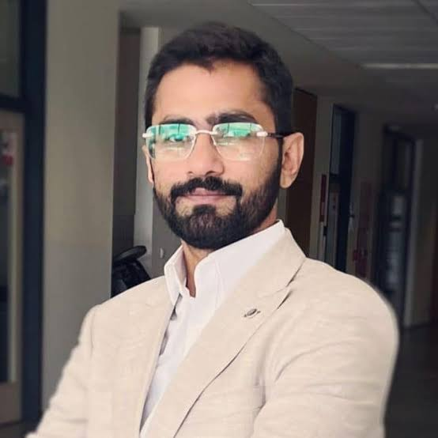

2023

Dr. Akif Rahim
Hydro-Climatologist · PhD
Flood & Drought Modeler
About Me
As a seasoned Hydro-Climate Data Scientist, I specialize in climate extremes, hydrological modeling, ecosystem impacts, and climate-change assessment. I am proficient in Python and R for hydrological simulation, runoff generation and routing, drought and flood assessment, and regional climate-impact modeling using mathematical, numerical, and computational methods.
I have hands-on experience with top-tier hydrological models — VIC, HEC-HMS, and CLIMADA — and advanced AI/ML applications in hydrology and climate science. I developed PakDMS, an operational drought monitoring and decision-support system for the Pakistan Meteorological Department, and contributed to the Pakistan Water Body Inventory.
I collaborated with Google Asia-Pacific to develop an AI-driven reservoir-operation and flood-forecasting system, currently operational with the Punjab Irrigation Department. I also served as a visiting researcher at the Japan Meteorological Research Institute (MRI), contributing to the development of 5 km × 5 km high-resolution climate projections for the Indus Basin.
I taught courses in Exploratory Data Analysis and Environmental Data Presentation to M.Sc. students at the Czech University of Life Sciences Prague.
Skills
Surface Water Hydrological Modeling (HEC-RAS, HEC-HMS)
6+ yrs.
R and Python Programming
4+ yrs.
Remote Sensing / GIS
6+ yrs.
Climate Data Analysis
5+ yrs.
Big Data / Data Science
2+ yrs.
Groundwater Modeling / Quality Analysis
2+ yrs.
Sustainability Analysis
3+ yrs.
Cloud Computing
1+ yrs.
Data Visualization
3+ yrs.
Selected Publications
Peer-reviewed research on flash droughts, climate extremes, and satellite precipitation — in journals including Remote Sensing of Environment, Water, and Atmosphere.
2023
Systematic analysis of the flash drought research: contribution, collaboration, and challenges.
2023
The Perturbation of Mangla Watershed Ecosystem in Pakistan Due to Hydrological Alteration.
Contact
House 76, Ismail Block, Al-Hafeez Garden, Phase-1,
Manawan GT Road, Lahore, Pakistan
Manawan GT Road, Lahore, Pakistan